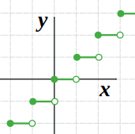
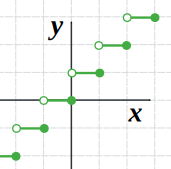
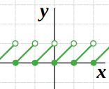

Floor and Ceiling Functions
The floor and ceiling functions give us the nearest integer up or down.
Example: What is the floor and ceiling of 2.31?

The Floor of 2.31 is 2
The Ceiling of 2.31 is 3
Floor and Ceiling of Integers
What if we want the floor or ceiling of a number that is already an integer?
That's easy: no change!
Example: What is the floor and ceiling of 5?
The Floor of 5 is 5
The Ceiling of 5 is 5
Here are some example values for you:
| x | Floor | Ceiling |
|---|---|---|
| −1.1 | −2 | −1 |
| 0 | 0 | 0 |
| 1.01 | 1 | 2 |
| 2.9 | 2 | 3 |
| 3 | 3 | 3 |
Symbols
The symbols for floor and ceiling are like the square brackets [ ] with the top or bottom part missing:
But I prefer to use the word form: floor(x) and ceil(x)
Definitions
How do we give this a formal definition?
Example: How do we define the floor of 2.31?
Well, it has to be an integer ...
... and it has to be less than (or maybe equal to) 2.31, right?
- 2 is less than 2.31 ...
- but 1 is also less than 2.31,
- and so is 0, and -1, -2, -3, etc.
Oh no! There are lots of integers less than 2.31.
So which one do we choose?
Choose the greatest one (which is 2 in this case)
So we get:
The greatest integer that is less than (or equal to) 2.31 is 2
Which leads to our definition:
Floor Function: the greatest integer that is less than or equal to x
Likewise for Ceiling:
Ceiling Function: the least integer that is greater than or equal to x
As A Graph
The Floor Function is this curious "step" function (like an infinite staircase):

The Floor Function
A solid dot means "including" and an open dot means "not including".
Example: at x=2 we meet:
- an open dot at y=1 (so it does not include x=2),
- and a solid dot at y=2 (which does include x=2)
so the answer is y=2
And this is the Ceiling Function:

The Ceiling Function
The "Int" Function
The "Int" function (short for "integer") is like the "Floor" function, BUT some calculators and computer programs show different results when given negative numbers:
- Some say int(−3.65) = −4 (the same as the Floor function)
- Others say int(−3.65) = −3 (the neighbouring integer closest to zero, or "just throw away the .65")
So be careful with this function!
The "Frac" Function
With the Floor Function, we "throw away" the fractional part. That part is called the "frac" or "fractional part" function:
frac(x) = x − floor(x)
It looks like a sawtooth:

The Frac Function
Example: what is frac(3.65)?
frac(x) = x − floor(x)
So: frac(3.65) = 3.65 − floor(3.65) = 3.65 − 3 = 0.65
Example: what is frac(−3.65)?
frac(x) = x − floor(x)
So: frac(−3.65) = (−3.65) − floor(−3.65) = (−3.65) − (−4) = −3.65 + 4 = 0.35
BUT many calculators and computer programs use frac(x) = x − int(x), and so their result depends on how they calculate int(x):
- Some say frac(−3.65) = 0.35 i.e −3.65 − (−4)
- Others say frac(−3.65) = −0.65 i.e. −3.65 − (−3)
So be careful using this function with negative values.